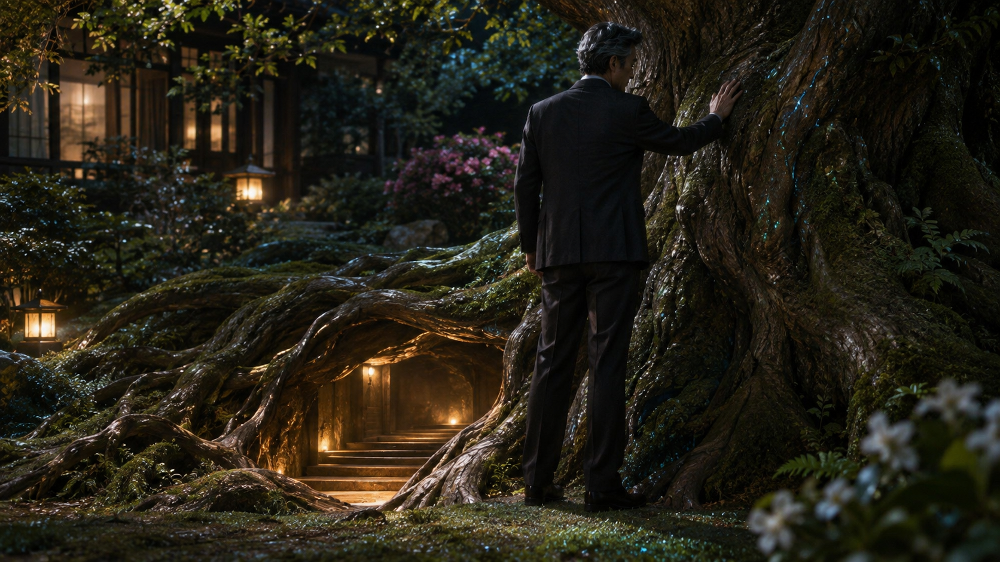
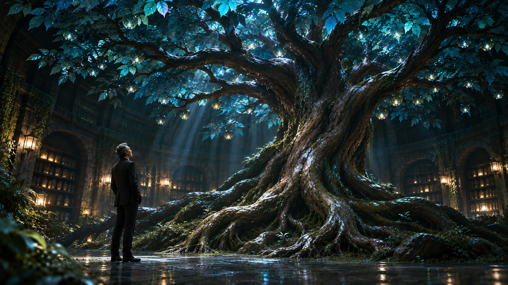
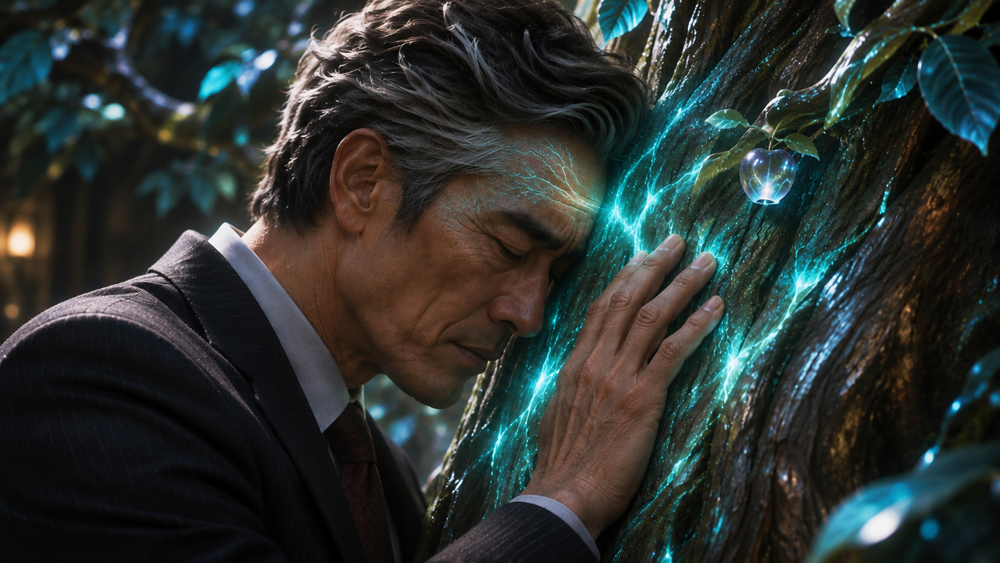
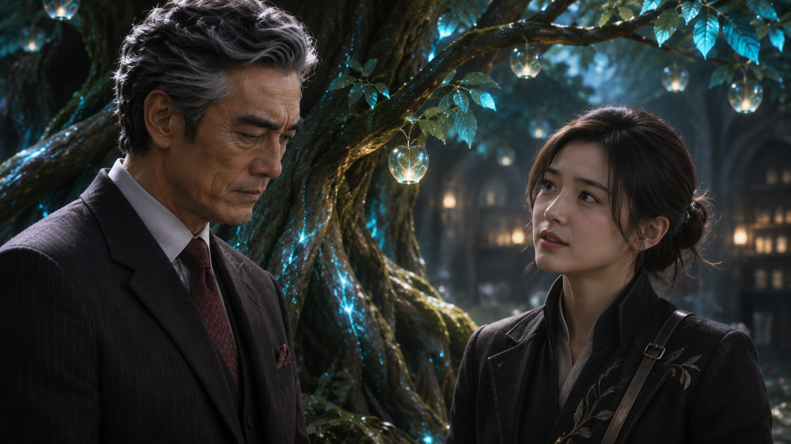
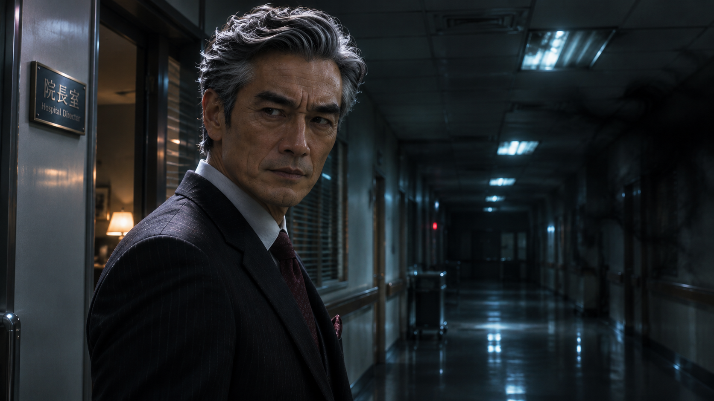
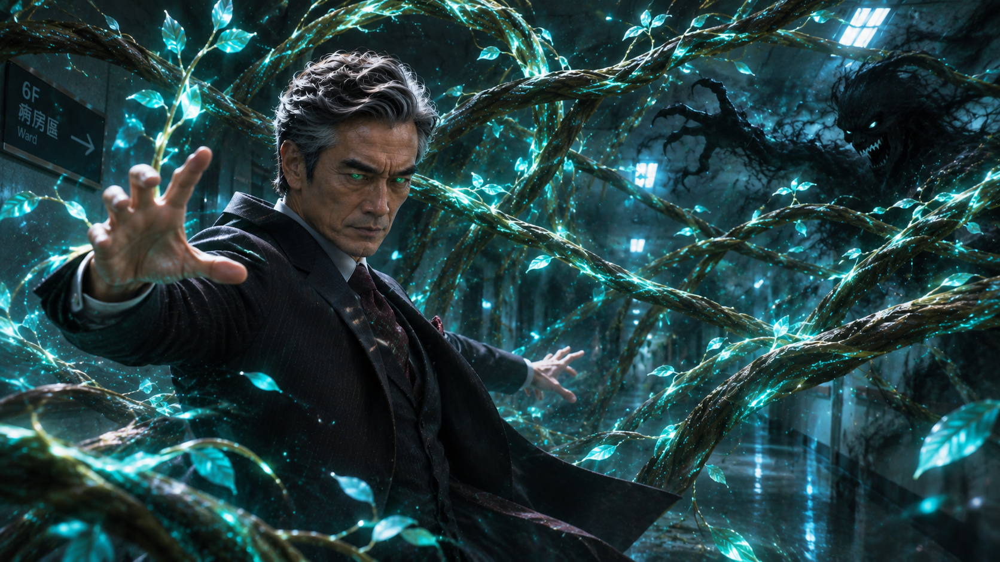
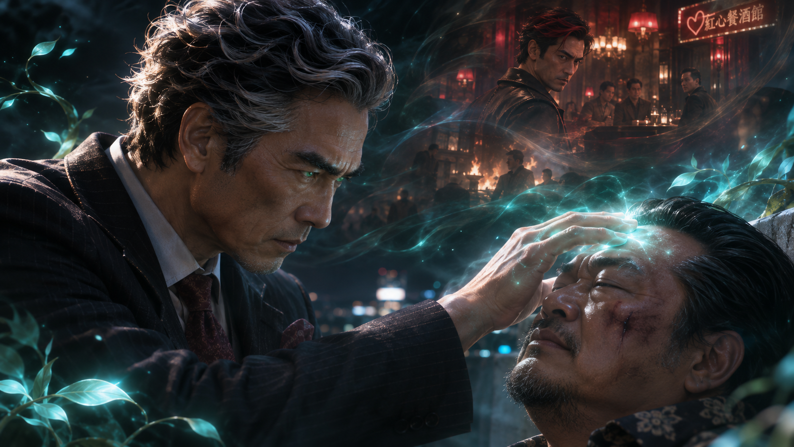

WHITE MAGIC ART STUDIO
第十三章
茂陽醫院的騷動
時間回到稍早——
景毅憤然離開餐廳後，梁晉輝仍坐在原位。
桌上的菜早已涼了。
他沒有叫住兒子，也沒有追出去，只是望著景毅離開的方向，許久不曾移動。
直到杯中的酒見了底。
他拿起酒瓶，替自己又倒了一杯。
一杯接著一杯。
偌大的包廂裡，只剩玻璃杯輕觸桌面的聲響。
最後，晉輝放下酒杯，緩緩站起身。
他整理了一下衣領，像是什麼事都沒發生過，獨自離開了餐廳。
梁家大宅
夜色已深。
晉輝沒有回房，而是穿過長廊，獨自來到宅邸後方的花院。
庭院裡的植物在夜風中輕輕搖曳。
他走向花院中央的一棵老樹，伸手貼上粗糙的樹皮。
「讓我進去吧。」

沒有任何咒語，也沒有耀眼的光芒。
樹幹深處傳來一聲低沉的震動。
下一刻，老樹周圍的草地緩緩隆起。
盤踞地下的粗壯樹根彼此分離，泥土沿著根系向兩側退開，一階又一階由木質根莖構成的階梯，逐漸延伸至地底深處。
晉輝沿著階梯走了下去。
身後，庭院重新恢復寧靜。
地下空間比想像中寬敞。
空氣中瀰漫著濃郁而清新的草木香氣。
無數粗細不一的樹根沿著牆壁蜿蜒，彷彿整座地下室並非人工開鑿，而是由一棵樹親自生長出來。
而在空間中央——
一棵巨大的異樹靜靜佇立。
它的樹幹粗壯，枝條向四面八方伸展，幾乎覆蓋整座地下空間。

最特別的是它的葉片。
不是尋常的翠綠，而是一種深淺交錯的青藍色。
微弱的光芒沿著葉脈緩緩流動，使整棵樹在幽暗的地下室裡，散發出如同深海般寧靜的色澤。
枝葉之間，懸掛著許多蘋果大小的果實。
每顆果實都有著不同的光芒。
有些明亮。
有些黯淡。
還有些，彷彿隨時都會熄滅。
晉輝走到樹前。
伸出手，輕輕撫過樹幹。
「……又來打擾妳了。」
他將額頭緩緩靠上樹皮。
下一瞬間，一道柔和的青藍色光芒從接觸的位置亮起。
光沿著樹幹向上攀升，穿過無數枝條，最終停留在一根尚未結果的細枝末端。

那裡，一點光芒緩緩凝聚。
一顆新的果實，在寂靜中逐漸成形。
晉輝閉著眼睛。
過了許久，才慢慢鬆開手。
「師父……？」
一道溫婉的聲音從階梯方向傳來。
晉輝回頭。
一名年約二十八歲的女子正站在入口，神情帶著幾分意外。
她是楊亞云。
梁家班的隊長，也是晉輝親手栽培的弟子。
「是妳啊，亞云。」
晉輝的聲音恢復了平日的溫和。
「抱歉，師父。」亞云微微低頭，「我經過花院時，發現秘道入口沒有關上，擔心出了什麼事，就下來看看。」
「沒事。」
晉輝笑了笑。
「什麼時候回國的？」
「昨天半夜。」
「這麼快？」
「任務結束得比預期早。」
晉輝點了點頭。
「那妳應該也聽說亞聖的事了吧？」
亞云略微遲疑。
「您是說……他去追討大少爺的那次任務？」
「嗯。」
「我聽說了。」
亞云走近幾步。
「不過，師父，若不是您特別交代他只能使用六成實力，以亞聖的能力，應該不至於失手。」
晉輝聞言，輕輕一笑。
「我確實是這麼交代的。」
「所以……您原本就沒打算讓他真的帶回大少爺？」
晉輝沒有回答。
只是抬頭望向枝葉間那些微微發亮的果實。
亞云見狀，也沒有繼續追問。
梁家班，是晉輝為了培養臺灣地區繼承木之力的聖術師而成立的組織。
除了傳授木系聖術的運用，他也將武術融入訓練之中。
因為他始終認為，木之聖術不該只被視為支援與療癒的力量。
即使身處最危險的戰場，也必須有保護自己與他人的能力。
楊亞云便是其中最出色的弟子之一。
身為木之術器使，她擁有能夠操控夢境的木瞳術。
而她的弟弟楊亞聖，則是一名擅長操控竹林的木之元素使。
兩人都是梁家班重要的戰力。
「亞云。」
「是，師父？」
晉輝忽然問道：
「妳覺得……她漂亮嗎？」
亞云愣了一下。
順著他的視線，望向眼前的青藍色巨樹。
「您是說……忘憂木？」
晉輝點頭。
亞云露出微笑。
「當然漂亮。」
她走到樹下，仰望那些散發微光的果實。
「忘憂木是您的術之木，不只擁有強大的驅魔能力，還能儲存栽種者的記憶。」
「再加上師父的木瞳術本身就與記憶有關……」
「我想，這世上恐怕沒有人比您更適合駕馭它了。」
晉輝安靜地聽著。
亞云又說：
「不過，我最喜歡的還是這些果實。」
「每一顆裡面，都收藏著師父人生中的一段回憶。」
「就像星星一樣。」
她微微一笑。
「如果有一天，忘憂木也能開花，那一定更漂亮。」
「開花啊……」
晉輝抬起頭。
「可惜，再厲害的聖術師，也無法讓自己的術之木開花。」
他的目光停留在剛剛生成的那顆果實上。
「至於這些果實……」
「外表雖然漂亮，裡面裝著的東西，卻不見得如此。」
亞云轉頭望向他。
「師父。」
「嗯？」
「恕我直言……」
她斟酌了一下語氣。
「把回憶寄放在這裡，真的好嗎？」
晉輝沒有說話。
「美好的回憶，值得我們反覆珍惜。」
「不好的回憶……有時候，也能讓我們變得更堅強。」
地下室安靜了下來。
只有枝葉間微弱的光芒，緩緩流轉。
良久。
晉輝才開口。
「妳說得對，孩子。」
他伸手撫摸樹幹。
「只是，有些回憶……我沒有資格再去回味。」
亞云的眼神微微一動。
「至於那些痛苦的記憶……」
晉輝停頓片刻。
「有時候，不必讓它們每一天都那麼清楚，也是一種寬恕。」
「師父……」
「別擔心。」
他回過頭，勉強露出一個笑容。
「我沒有真的把記憶從腦海裡完全抹去。」
「只是把那些太過清晰的片段，暫時寄放在這裡。」
他望向樹梢。
「等哪一天，我有勇氣重新面對，再把它們取回來。」
亞云看著他。
她跟隨晉輝多年，很少見到師父露出這樣的神情。
「師父……今天發生什麼事了嗎？」
晉輝沒有立刻回答。
「如果有什麼我能幫忙的，請一定告訴我。」
亞云輕聲說。
「至少……我希望您今晚能睡得安穩一點。」
晉輝笑了。
只是那笑容裡，藏著難以掩飾的苦澀。
「亞云。」
「是。」
「有些事情……不是做了一場好夢，醒來就能改變的。」
他低下頭。
「比如說……」
「自己是個失格的父親。」
亞云怔住。
晉輝的聲音很輕。
「我花了一輩子教別人如何運用力量。」
「卻連自己的孩子，都不知道該怎麼好好面對。」
亞云沉默了幾秒。
「師父。」
她緩緩開口。
「我不知道您和大少爺、二少爺之間究竟發生了什麼。」
「但對我們梁家班而言，您一直都是一位很好的老師。」
晉輝抬起眼。
「至於父親……」
亞云想了想。
「我覺得，全天下的父親，其實都還在學習怎麼當父親吧。」
「學習……嗎？」
「是啊。」
亞云笑了笑。
「師父這輩子，也只當過一次父親，不是嗎？」
「更何況，您還得照顧三個孩子。」
她的語氣漸漸柔和。
「我相信您已經盡力了。」
「只是……有些事情，光靠努力，可能還不夠。」
晉輝望著她。

亞云接著說：
「有時候，孩子想要的，不一定是父親替他安排好一切。」
「而是希望父親願意聽他把話說完。」
晉輝微微垂下眼。
「就像我跟我父親一樣。」
亞云輕笑。
「以前我們也常常吵架。」
「楊師父也是嗎？」
「您不知道的事情可多了！」
她笑得更開朗了些。
「他總覺得自己知道什麼對我最好，我也總覺得他什麼都不懂。」
「後來才發現……我們其實都很在乎彼此。」
「只是說出口的話，常常不是心裡真正想說的。」
晉輝沉默許久。
最後，輕輕點頭。
「……原來如此。」
他再次看向忘憂木。
那顆新生的果實，仍在枝頭散發著微弱光芒。
「謝謝妳，亞云。」
「不會，師父。」
亞云微微欠身。
「如果您還需要我……」
「沒事了。」
晉輝轉身望向她。
這一次，他的笑容自然了些。
「妳先回崗位吧。剛回國，別太累。」
「是！」
亞云應聲，轉身走向階梯。
走到一半，她又回頭看了一眼。
晉輝仍站在忘憂木前。
只是這一次，他沒有再碰那些果實。
茂陽醫院｜幾個小時後
夜已深。
茂陽醫院的走廊，安靜得只剩空調運轉的低鳴。
梁晉輝站在院長辦公室門前。
他整理了一下衣袖，抬手敲門。
叩、叩。
「武兒？」
沒有回應。
「是我。」
他停頓片刻。
「能聊一下嗎？」
門後依舊寂靜。
晉輝輕輕轉動門把。
門沒有上鎖。
辦公室裡一片漆黑。
他打開燈。
辦公桌上還留著幾份尚未整理的文件，椅子卻是空的。
晉輝站在門口，沒有走進去。
「……還在生氣啊。」
他低聲嘆息。
正準備離開時——
走廊盡頭的燈，忽然閃了一下。
滋。
接著是第二盞。
第三盞。
晉輝停下腳步。
空氣變了。
原本熟悉的醫院消毒水氣味之中，混入一絲難以形容的腐敗氣息。
牆角浮現出細小的黑色紋路。
那些紋路沿著磁磚縫隙緩緩蔓延，像某種寄生在建築物裡的東西，正在逐漸甦醒。
晉輝的眼神沉了下來。

「……偏偏挑今天。」
他抬起右手。
一點淺青色光芒，自掌心亮起。
細小的藤枝沿著手腕生長，輕柔地盤繞上他的前臂。
青藍色的葉片一片片展開。
忘憂木。
他的術之木，也是他身為木之元素使最具代表性的力量。
看似溫柔。
卻足以成為惡魔的噩夢。
走廊盡頭，一團黑影忽然從天花板角落竄出！
晉輝甚至沒有轉身。
只見他指尖輕輕一動。
咻！
一根藤枝從肩側彈射而出，在半空中迅速交錯，將黑影牢牢束縛。
下一瞬間。
青藍色光芒沿著藤枝閃過。
黑影化作一縷黑煙，消散在走廊之中。
晉輝緩緩回頭。
「一隻？」
他抬眼望向樓梯間。
更深處，傳來密密麻麻的低語聲。
「……看來不只。」
他走向樓梯。
每踏上一階，手臂上的藤枝便多生出一片青藍色葉片。
六樓。
樓梯間的感應燈忽明忽暗。
晉輝剛踏出防火門，便察覺到天花板裡異常密集的氣息。
他停下腳步。
抬頭。
「出來吧。」
下一秒——
砰！
天花板的裝飾板猛然震動！
數十道漆黑身影從上方竄出，朝他同時撲來！
晉輝側身避開第一道黑影。
腳步一轉。
左腿迅速掃出！
砰！
一道身影撞上牆面。
他順勢俯身，避開另一側的撲擊。
右手向上一抬。
手臂上的藤枝瞬間分裂成十數條細長枝蔓！
枝條在半空中交錯。
青藍色葉片接連亮起。
剎那間，整條走廊彷彿被一片迅速展開的樹冠籠罩。
枝蔓從不同方向穿梭，精準攔截每一道黑影。
沒有多餘的動作。
也沒有誇張的聲響。
只有一道道青藍色光芒，在昏暗的走廊裡接連閃過。

黑影紛紛化作煙霧。
晉輝放下手。
枝條重新收攏，輕輕纏回手臂。
「……真是不懂得挑時間。」
他繼續向前。
才走沒幾步，一道黑影忽然從燈光死角竄出！
晉輝看也沒看。
藤枝瞬間伸出！
砰！
黑影被牢牢固定在牆面上。
牆板隨之凹陷。
幾片碎裂的磁磚掉落地面。
晉輝停下腳步。
看著牆上的裂痕。
沉默兩秒。
「……又得報修了。」
他無奈地嘆了口氣。
「早知道就輕一點。」
就在這時——
喀。
旁邊一間病房的門被打開。
一名病患探出頭來。
「請問……剛剛是什麼聲音？」
晉輝轉頭。
病患看著走廊裡尚未消散的黑煙，又看了看牆上不自然的裂痕。
兩人四目相對。
「……」
「……」
晉輝輕輕嘆息。
「這麼晚了，怎麼還沒睡？」
病患張開嘴，正準備說話。
晉輝抬起手指。
一縷極細的青綠色藤絲，輕輕觸碰對方的額頭。
他的木瞳術——記憶。
將剛才那段不該被看見的畫面，從病患意識中暫時淡去。
病患眨了眨眼。
「……咦？」
他望向走廊。
「我剛剛……要做什麼來著？」
「回房休息。」
晉輝語氣平靜。
「喔……對。」
病患點點頭。
轉身回到病房。
門輕輕關上。
晉輝看了一眼。
「……現在的病人，精神還真好。」
然而，越往上走，惡魔的氣息就越濃。
七樓的走廊，已經完全失去了原本的寧靜。
燈光忽明忽暗。
牆面上，無數黑影沿著角落緩緩移動。
它們不再主動現身。
而是躲藏在牆壁、天花板與病房之間，彷彿正在等待什麼。
晉輝站在走廊中央。
望著四周。
「不出來？」
沒有回應。
只有細碎的低語，從四面八方傳來。
晉輝輕輕點頭。
「好。」
他伸出手。
掌心貼上牆面。
「那就換我找你們。」
下一瞬間。
青藍色光芒沿著牆壁迅速擴散！
地板縫隙裡，細小的根鬚接連生長。
牆角、燈殼、天花板——
無數藤枝同時伸展。
它們沒有破壞建築，而是沿著既有的縫隙與結構迅速交錯，形成一道道精密的木質紋路。
短短幾秒。
整層樓便被忘憂木的枝條包圍。
晉輝閉上雙眼。
枝葉微微顫動。
藏匿在陰影裡的惡魔，忽然發現眼前的走廊變了。
原本潔白的牆壁消失。
取而代之的，是一片看不見盡頭的青藍色森林。
樹木高聳。
枝葉遮天。
每條道路都通往相同的方向。
惡魔們四散奔逃。
卻無論如何都無法離開。
而在森林深處，一棵巨大的枯木靜靜佇立。
青藍色葉片從樹冠緩緩落下。
每當葉片觸及一道黑影，那道身影便逐漸消散。
直到最後一縷黑煙，也消失在樹林之中。
走廊裡。
晉輝睜開眼睛。
他仍站在原地。
掌心緩緩離開牆面。
四周的藤枝隨之收攏，化作一片片青藍色葉片，逐漸消失。
「……總算清靜了。」
他繼續往前。
轉過七樓的轉角時，一名推著點滴架的病患正好走出病房。
「不好意思……」
病患揉了揉眼睛。
「請問護士站在哪邊？」
晉輝正準備回答。
忽然，他眼角一動。
天花板深處，一道尚未清除的黑影正悄悄逼近。
晉輝抬手。
啪！
一根細藤迅速竄入天花板縫隙。
青藍色光芒一閃。
黑影消散。
病患困惑地抬起頭。
「……剛剛是不是有什麼聲音？」
晉輝面不改色。
「冷氣管線。」
「喔……」
「護士站往前，左轉。」
「謝謝。」
病患推著點滴架，慢慢走遠。
晉輝目送他離開。
「……還是別讓他知道比較好。」
他輕輕一揮手。
最後幾片青藍色葉片，消失在空氣之中。
頂樓。
防火門前。
晉輝停下腳步。
整棟醫院裡的異常氣息，幾乎都已經消失。
唯獨門後——
還殘留著數十道不安分的黑暗氣息。
他抬起頭。
門縫間吹來一陣冷風。
風裡夾雜著細碎的低語。
晉輝伸手握住門把。
「……真是麻煩的夜晚。」
喀。
門開了。
頂樓的風很大。
夜空下，醫院周圍的城市燈火延伸至遠方。
一名年輕男子正獨自站在護欄附近。
他的肩膀微微顫抖。
目光失焦，彷彿已經聽不見周圍的聲音。
而在他身旁——
數十道黑影正悄悄聚集。
它們沒有立即現身。
只是沿著地面與牆角緩緩移動，不斷在男子耳邊低語。
晉輝的眼神沉了下來。
「……原來如此。」
他終於明白，為什麼整棟醫院會突然聚集這麼多惡魔。
那些黑影並不是毫無目的地闖入。
它們一直在等待某個人的精神防線徹底崩潰。
晉輝緩緩向前。
「年輕人。」
男子沒有回頭。
「這裡風大。」
晉輝停在一段距離外。
「先過來吧。」
男子的聲音顫抖。
「……你是誰？」
「我是這間醫院的人。」
晉輝語氣平穩。
「我叫梁晉輝。」
男子緩緩轉過頭。
「……你不懂。」
「也許吧。」
晉輝沒有否認。
「但你可以告訴我。」
男子低下頭。
「我已經……什麼都沒有了。」
晉輝沉默片刻。
他的腦海裡，忽然浮現稍早在餐廳裡，景毅轉身離開的背影。
「……我今天，也剛跟兒子吵了一架。」
男子怔住。
晉輝望著他。
「我以為自己做的決定，都是為了他好。」
「結果他根本不這麼想。」
男子沒有說話。
「我現在也不知道，該怎麼讓他願意再聽我說話。」
晉輝緩緩伸出手。
「所以……我不會說我完全懂你的感受。」
「但至少，今晚先讓自己安全下來。」
就在這時。
一道黑影突然從男子身後竄出！
晉輝眼神一凝。
手臂上的忘憂木瞬間展開！
咻！
青藍色藤枝掠過夜空，迅速將黑影束縛。
緊接著，數十道黑影同時騷動！
它們沿著地面、牆壁與夜色迅速逼近。
晉輝沒有後退。
右手維持著保護男子的木系結界。
左手輕輕一揮。
數十片青藍色葉片從枝條間飛出。
葉片在夜風中盤旋，形成一道細密的光幕，將黑影阻隔在外。
「別聽那些聲音。」
晉輝望著男子。
「看著我。」
男子的呼吸急促。
「我……我不知道該怎麼辦……」
「沒關係。」
晉輝的聲音比剛才更柔和。
「現在不用決定任何事情。」
「先過來。」
男子終於抬起頭。
就在他身體失去平衡的瞬間，晉輝迅速伸出忘憂木的枝條，穩穩將他帶回安全的位置。
青藍色藤枝在兩人周圍交錯，形成一道堅固的保護屏障。
男子坐在地上，仍止不住顫抖。
晉輝蹲下身。
「好了。」
他輕聲說。
「你現在安全了。」
男子低着頭，沒有回答。
晉輝望向四周。
最後幾道黑影，正試圖從夜色中逃離。
他抬起手。
青藍色葉片在空中輕輕一轉。
那些黑影隨即消散。
頂樓終於恢復寧靜。
晉輝看著眼前的男子。
他知道，對方剛才看見了許多不該出現在普通人眼中的景象。
更重要的是——
這名男子身上，還殘留著異常濃厚的惡魔氣息。
晉輝伸出手。
「讓我確認一件事。」
他的指尖輕輕觸碰男子額頭。
木瞳術——記憶。

一道柔和的青藍色光芒，在他的虹膜深處閃過。
原本，他只是想確認那些惡魔是否仍對男子造成影響。
然而下一瞬間——
晉輝的動作停住了。
陌生的記憶，突然湧入他的意識。
破碎的畫面接連浮現。
一間餐酒館。
紅色的招牌。
幾張熟悉的面孔。
以及——
一道被火光照亮的身影。
晉輝的眉頭逐漸皺起。
他看見男子曾經與一群幫派成員聚集在那間餐酒館裡。
也看見一場突如其來的災難，徹底改變了那裡的一切。
原本熱鬧的空間，如今只剩滿目狼藉。
男子跪在地上。
不斷呼喊同伴的名字。
卻再也得不到回應。
而在記憶最深處——
一名男子站在火光之中。
短髮。
深色衣著。
一雙泛著枯葉黃色光芒的眼睛。
晉輝的瞳孔微微收縮。
炎君。
下一刻。
記憶裡傳來一道低沉的聲音。
「去找一個人。」
火光中的男子緩緩轉頭。
「梁景皓。」
轟——
晉輝猛然睜開眼睛。
他的手停在半空中。
「……景皓？」
他低頭看向眼前的男子。
腦海裡，逐漸浮現出一個名字。
蔣國華。
這個人，竟然是炎君派出的探子。
而他所接到的任務——
竟然與自己的長子有關。
晉輝緩緩握緊拳頭。
「……這群混帳。」
他的聲音低得幾乎聽不見。
「到底想幹什麼？」
他再次看向國華。
這名男子仍坐在地上，神情疲憊而茫然。
晉輝沉默片刻。
最後，他伸出手。
一縷柔和的青藍色光芒，再次亮起。
他將國華今晚所見的異常景象，暫時從記憶中淡去。
但對方曾經歷的痛苦，並不是一句「忘掉」就能真正解決。
晉輝收回手。
「今晚的事，我會處理。」
他看著國華。
「至於你……先好好休息。」
說完，他站起身。
拿出手機，通知院內人員前來照顧國華。
夜風吹過。
晉輝走向頂樓出口。
然而這一次，他沒有再回頭看向院長辦公室的方向。
腦海裡，只剩下剛才在記憶中聽見的那三個字。
梁景皓。
十年前，他失去了與長子好好說話的機會。
如今，一名魔君竟然已經盯上了他。
晉輝停下腳步。
緩緩抬起頭。
「……這次，不能再等了。」
他轉身走入樓梯間。
決定前往某個地方。